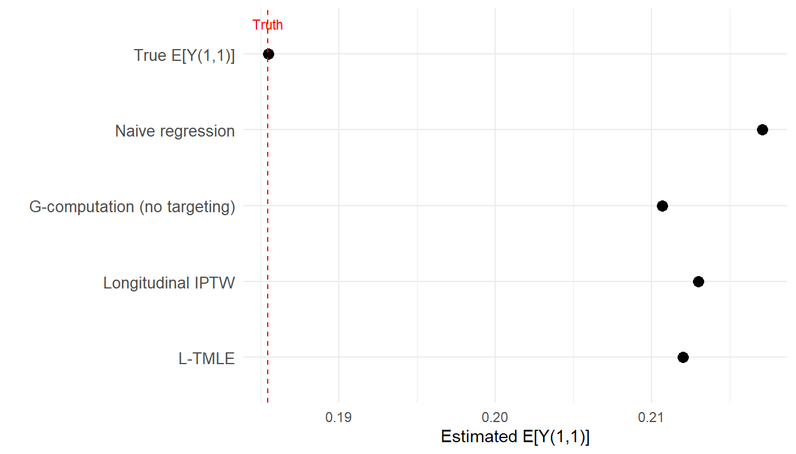
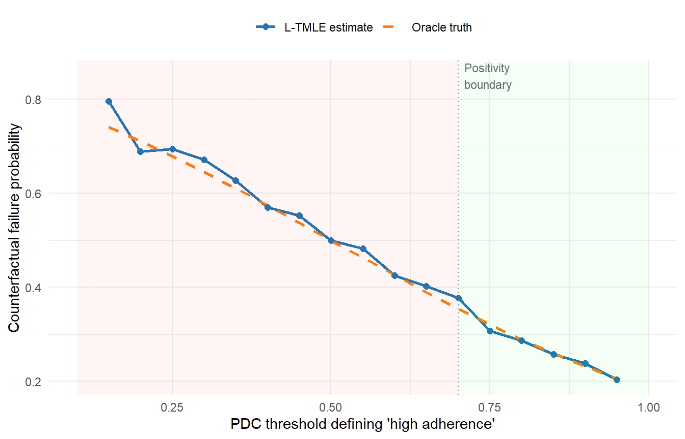

A worked HIV cohort example with CD4 as the time-dependent confounder
Estimated reading time: 55 minutes
Learning objectives
Implement the backwards sequential regression (G-computation) that underpins L-TMLE
Construct clever covariates for longitudinal targeting and explain how they differ from point-treatment TMLE
Walk through the full L-TMLE algorithm: treatment mechanism estimation, sequential outcome regression, and targeting steps
Compare L-TMLE estimates against naive regression, G-computation, and IPTW for a longitudinal treatment effect
Diagnose positivity violations using propensity score distributions and understand when static regimes become unreliable
Explain the forgiveness curve concept and how it motivates the shift interventions in the next chapter
17 Where This Chapter Fits
The previous chapter explained why time-varying confounding affected by prior treatment breaks standard regression, and why g-methods are needed. This chapter shows how one specific g-method, longitudinal TMLE (L-TMLE), works in practice. We use a single HIV cohort example with CD4 count as the time-dependent confounder and virologic failure as the outcome. By the end, you will understand the backwards regression logic, the targeting steps that make L-TMLE doubly robust, and how to implement the procedure with the ltmle R package.
18 What L-TMLE Estimates in a Longitudinal HIV Study
Our causal question is:
What is the probability of virologic failure by 12 months if every patient maintained high ART adherence at each two-month interval, compared to never maintaining high adherence, adjusting for time-varying CD4 count?
This is a comparison of two static regimes: “always high adherence” (\(\bar{a} = (1,1)\)) versus “never high adherence” (\(\bar{a} = (0,0)\)), in a simplified two-time-point version of the HIV cohort. We use two time points to keep the mechanics visible; the same logic extends to any number of visits.
L-TMLE estimates the counterfactual mean outcome under each regime: \[
\psi_1 = E[Y(\bar{a} = (1,1))] \quad \text{and} \quad \psi_0 = E[Y(\bar{a} = (0,0))]
\]
The average treatment effect (ATE) is \(\psi_1 - \psi_0\).
19 Data Structure and Node Ordering
The observed data for each patient follows a strict temporal order:
Figure 19.1: Node ordering for the two-time-point HIV cohort. CD4 at visit 1 is affected by ART adherence at visit 1 and confounds the relationship between visit-2 adherence and virologic failure.
19.1 The data
We simulate a cohort that matches this structure. The data-generating process encodes the feedback: ART adherence at visit 1 raises CD4, higher CD4 makes visit-2 adherence more likely (patients who feel better tend to adhere), and both adherence history and CD4 affect virologic failure.
Show code
set.seed(2026)n <-2000# Baseline covariatesW_age <-rnorm(n, mean =40, sd =10)W_male <-rbinom(n, 1, 0.6)W_cd4_bl <-rnorm(n, mean =350, sd =120)W_cd4_bl <-pmax(50, W_cd4_bl)W_vl_bl <-rnorm(n, mean =4.2, sd =0.7) # log10 viral load# Composite baseline score for modelsW <-0.01* (W_age -40) -0.001* (W_cd4_bl -350) +0.3* W_vl_bl -0.1* W_male# Visit 1: ART adherence depends on baselineg1_true <-plogis(0.5+0.8* W)A1 <-rbinom(n, 1, g1_true)# Visit 1: CD4 count responds to adherence (the feedback)L1 <-rnorm(n, mean =0.5* W +0.7* A1, sd =1)# Visit 2: adherence depends on CD4 and prior adherenceg2_true <-plogis(-0.3+0.6* L1 +0.4* A1)A2 <-rbinom(n, 1, g2_true)# Outcome: virologic failure depends on full history# Higher A1, A2, and L1 reduce failure risk (negative coefficients on a failure outcome)Y <-rbinom(n, 1, plogis(-0.5-0.5* A1 -0.6* A2 -0.3* L1 +0.4* W))dat <-tibble(W, A1, L1, A2, Y)cat("Observed data (first 6 rows):\n")#> Observed data (first 6 rows):head(dat)#> # A tibble: 6 × 5#> W A1 L1 A2 Y#> <dbl> <int> <dbl> <int> <int>#> 1 1.54 1 1.76 1 1#> 2 1.21 1 1.52 1 1#> 3 1.08 1 2.33 0 0#> 4 1.27 1 0.543 0 0#> 5 0.803 0 -0.206 0 1#> 6 0.698 1 1.15 1 0cat("\nOverall virologic failure rate:", round(mean(Y), 3), "\n")#> #> Overall virologic failure rate: 0.277
19.2 The true causal effect
Because we control the data-generating process, we can compute the true counterfactual outcomes analytically. The marginal expectation under always-treat integrates over the distribution of \(L_1\) under \(A_1 = 1\): since \(L_1 \mid A_1=1, W \sim N(0.5W + 0.7, 1)\), we can use a large Monte Carlo sample with a fresh seed to get a stable benchmark.
Show code
# Use a separate seed and large MC sample to avoid dependence on the dataset.seed(9999)n_mc <-100000W_mc <-rep(W, length.out = n_mc)# Counterfactual under (A1=1, A2=1): always high adherenceL1_cf11 <-rnorm(n_mc, mean =0.5* W_mc +0.7*1, sd =1)Y_cf11 <-plogis(-0.5-0.5*1-0.6*1-0.3* L1_cf11 +0.4* W_mc)# Counterfactual under (A1=0, A2=0): never high adherenceL1_cf00 <-rnorm(n_mc, mean =0.5* W_mc +0.7*0, sd =1)Y_cf00 <-plogis(-0.5-0.5*0-0.6*0-0.3* L1_cf00 +0.4* W_mc)true_EY_11 <-mean(Y_cf11)true_EY_00 <-mean(Y_cf00)true_ATE <- true_EY_11 - true_EY_00cat("True E[Y(1,1)] (always adhere):", round(true_EY_11, 4), "\n")#> True E[Y(1,1)] (always adhere): 0.1855cat("True E[Y(0,0)] (never adhere): ", round(true_EY_00, 4), "\n")#> True E[Y(0,0)] (never adhere): 0.4514cat("True ATE: ", round(true_ATE, 4), "\n")#> True ATE: -0.2659
20 Why Naive Regression Does Not Answer This Question
A quick demonstration of the bias. If we fit a standard logistic regression conditioning on all variables including \(L_1\), the coefficient on \(A_1\) is attenuated because we block the pathway \(A_1 \to L_1 \to Y\).
L-TMLE estimates the causal effect through three ideas working together:
Sequential regressions, working backwards. This extends the G-computation approach from Chapter 2.1 to the longitudinal setting. In point-treatment G-computation, we fit one outcome model and marginalize. Here, we build a sequence of regressions. Start at the final outcome and model \(E[Y \mid A_2, L_1, A_1, W]\). This conditions on \(L_1\) to deconfound \(A_2\). Then move backwards: take the predicted outcomes under the intervention \(A_2 = 1\) and regress them on \((A_1, W)\) only, without conditioning on \(L_1\). This integrates \(L_1\) out, preserving the mediated effect of \(A_1\) through \(L_1\). The result is a nested G-computation estimate.
Treatment mechanism models. Estimate the probability of receiving treatment at each visit conditional on the observed history: \(\hat{g}_1(W) = P(A_1 = 1 \mid W)\) and \(\hat{g}_2(A_1, L_1, W) = P(A_2 = 1 \mid A_1, L_1, W)\).
Targeting steps. Use the treatment mechanism to construct “clever covariates” that correct the sequential regressions for any remaining bias. These targeting steps make L-TMLE doubly robust: at each time point, the final estimate is consistent if either the outcome regression or the treatment model is correctly specified.
We now walk through each step.
21.1 In plain English: how L-TMLE untangles the confounding
The three ideas above can feel abstract. Here is the same procedure described as a recipe, using the HIV cohort as the running example.
Step 1: Learn the treatment mechanism (the “g-model”). At each quarter, build a model that predicts: given a patient’s current health status and history, how likely were they to actually have high adherence? This captures real-world patterns: sicker patients are less likely to be highly adherent, patients who already missed doses are less likely to catch up. These predicted probabilities will be used later to reweight the sample so that the comparison between “high adherence” and “low adherence” groups is fair.
Step 2: Learn the outcome risk (the “Q-model”). At each quarter, build a model that predicts: given a patient’s health status, adherence level, and history, what is their probability of virologic failure? This is ordinary outcome modeling, but it will be fit at each time point in reverse chronological order.
Step 3: Start at the last time point and work backward. Starting at Visit 2: predict each patient’s failure risk as if they had high adherence, regardless of what they actually did. Adjust using the g-model: patients who were unlikely to have high adherence naturally but did anyway get upweighted, and vice versa. This is the “targeting” step: it tilts the Q-model’s predictions so they are unbiased for the causal estimand, not just good at prediction.
Then Visit 1: take the adjusted Visit-2 predictions and treat them as the “outcome” for Visit 1. Fit the Q-model again, plug in “high adherence” for Visit 1, apply targeting. This propagates the causal effect backward through time. Crucially, the Visit-1 model does not condition on CD4 at Visit 1, because CD4 is a consequence of Visit-1 adherence, and conditioning on it would block the indirect effect.
Step 4: Average over the population. The final L-TMLE estimate is the average of the Visit-1 adjusted predictions across all patients. This single number answers the question: what would the failure rate be if every patient had maintained high adherence throughout?
Why this works when standard regression does not. Standard regression conditions on adherence: it compares patients who happened to be adherent with those who did not, at each time point. But these groups differ systematically: the adherent patients tend to be healthier. L-TMLE intervenes on adherence: it sets adherence to the target level for everyone and uses the g-model to reweight so that the comparison is fair even when healthier patients are more likely to adhere. The backward iteration handles the additional complication that adherence at Visit 1 affects CD4, which then affects both adherence at Visit 2 and the outcome. No single regression can untangle this feedback loop; the sequential structure of L-TMLE is specifically designed for it.
22 Phase A: Estimate the Treatment Mechanisms
In point-treatment TMLE, we estimate one propensity score. In L-TMLE, we estimate a treatment mechanism at every time point.
Show code
# Time 1: P(A1 = 1 | W)g1_mod <-glm(A1 ~ W, family = binomial, data = dat)g1_hat <-predict(g1_mod, type ="response")g1_hat <-pmax(0.01, pmin(0.99, g1_hat)) # bound away from 0/1# Time 2: P(A2 = 1 | A1, L1, W) (conditions on full history)g2_mod <-glm(A2 ~ L1 + A1 + W, family = binomial, data = dat)g2_hat <-predict(g2_mod, type ="response")g2_hat <-pmax(0.01, pmin(0.99, g2_hat))
The time-2 model conditions on the full observed history including \(L_1\) and \(A_1\). This is the key difference from point-treatment TMLE. Bounding the propensity scores away from 0 and 1 prevents extreme clever covariates in the targeting step.
22.0.1 Cumulative treatment probability
For the “always adhere” regime, the probability that a patient follows the full regime is the product:
This product gives the probability that a patient followed the full “always adhere” regime. A patient who was unlikely to adhere at both visits will have a very small cumulative probability, and inverting it produces a large weight.
Show code
# Evaluate g2 under the intervention value A1=1g2_under_a1 <-predict(g2_mod,newdata = dat %>%mutate(A1 =1),type ="response")g2_under_a1 <-pmax(0.01, pmin(0.99, g2_under_a1))g_cumulative <- g1_hat * g2_under_a1cat("Cumulative g range:", round(range(g_cumulative), 3), "\n")#> Cumulative g range: 0.191 0.78
This is where L-TMLE diverges from point-treatment TMLE. Instead of one outcome model, we build a sequence of regressions starting at the final outcome and working backwards.
23.1 Step 2a: Model the final outcome
Fit \(E[Y \mid A_2, L_1, A_1, W]\), the expected outcome given the complete history. Then predict under the intervention \(A_2 = 1\).
Show code
# Outcome model: conditions on full history including L1Q2_mod <-glm(Y ~ A2 + L1 + A1 + W + A1:A2, family = binomial, data = dat)# Predict under intervention A2 = 1, keeping everything else observedQ2_A2is1 <-predict(Q2_mod,newdata = dat %>%mutate(A2 =1),type ="response")cat("Q2(A2=1) range:", round(range(Q2_A2is1), 4), "\n")#> Q2(A2=1) range: 0.076 0.5652
This conditions on \(L_1\) to properly deconfound \(A_2\). The prediction \(\hat{Q}_2(1, L_1, A_1, W)\) tells us: for each patient, what virologic failure probability would we expect if they had high adherence at visit 2, given their actual CD4 and visit-1 adherence?
23.2 Step 2b: Move backwards and create a pseudo-outcome
Now the critical step. We take the predictions \(\hat{Q}_2(1, L_1, A_1, W)\) and regress them on \((A_1, W)\) only, without conditioning on \(L_1\). This averages over \(L_1\) as it would arise under the intervention.
Show code
# Backwards regression: model Q2 predictions as function of (A1, W) onlyQ1_mod <-glm(Q2_A2is1 ~ A1 + W, family = quasibinomial, data = dat)# Predict under intervention A1 = 1Q1_A1is1 <-predict(Q1_mod,newdata = dat %>%mutate(A1 =1),type ="response")cat("G-computation estimate E[Y(1,1)]:", round(mean(Q1_A1is1), 4), "\n")#> G-computation estimate E[Y(1,1)]: 0.2107cat("True E[Y(1,1)]: ", round(true_EY_11, 4), "\n")#> True E[Y(1,1)]: 0.1855
By not conditioning on \(L_1\) in this second regression, we let CD4 vary as it naturally would under \(A_1 = 1\). Step 2a conditioned on \(L_1\) where it was needed (as a confounder of \(A_2\)). Step 2b integrates \(L_1\) out where conditioning would be harmful (as a mediator of \(A_1\)). This is longitudinal G-computation. But like point-treatment G-computation, it depends on all models being correctly specified. The targeting steps below add robustness.
24 Phase C: Targeting for Double Robustness
The initial estimates \(\hat{Q}_2\) and \(\hat{Q}_1\) are optimized for prediction but not yet targeted at our specific estimand. The targeting steps update them using information from the treatment mechanism, achieving double robustness.
24.1 Step 3a: Target \(\hat{Q}_2\) at time 2
Construct the clever covariate at time 2. For the “always adhere” regime, among patients who followed the regime at both visits:
This is the inverse cumulative probability of following the full regime: it equals zero for patients who deviated from “always adhere” and a large positive number for patients who followed the regime despite having a low probability of doing so. Fit the fluctuation model and update.
Show code
# Clever covariate at time 2# Use g2 evaluated at the *intervention* value A1=1 (g2_under_a1),# not the observed-data g2_hat. For patients who followed the regime# (A1=1), these are identical; for others, the indicator zeroes out H2.H2 <- (dat$A1 ==1& dat$A2 ==1) / (g1_hat * g2_under_a1)# Initial predictions at observed treatment valuesQA_init_t2 <-predict(Q2_mod, type ="response")# Fluctuation modelfluc2 <-glm(dat$Y ~-1+offset(logit(QA_init_t2)) + H2,family = binomial)eps2 <-coef(fluc2)# Update Q2 predictions under A2=1Q2_star <-plogis(logit(Q2_A2is1) + eps2 / (g1_hat * g2_under_a1))cat("Epsilon at time 2:", round(eps2, 5), "\n")#> Epsilon at time 2: 0.00412
The fluctuation model regresses \(Y\) on the clever covariate \(H_2\) using the logit of the initial \(\hat{Q}_2\) as an offset. The coefficient \(\hat{\epsilon}_2\) measures how much the initial outcome model needs to be corrected: a small \(\hat{\epsilon}_2\) means the outcome model was already well-calibrated for the causal estimand; a large one means the treatment mechanism reveals bias that the outcome model alone missed. The updated \(\hat{Q}_2^*\) now reflects both the outcome regression and the treatment mechanism information.
24.2 Step 3b: Target \(\hat{Q}_1\) at time 1
Repeat the targeting at time 1, using the updated \(\hat{Q}_2^*\) as the outcome.
Show code
# Re-fit backwards regression using targeted Q2*Q1_mod_updated <-glm(Q2_star ~ A1 + W, family = quasibinomial, data = dat)Q1_updated <-predict(Q1_mod_updated, type ="response")Q1_under_a1 <-predict(Q1_mod_updated,newdata = dat %>%mutate(A1 =1),type ="response")# Time-1 clever covariateH1 <- (dat$A1 ==1) / g1_hat# Fluctuation model at time 1fluc1 <-glm(Q2_star ~-1+offset(logit(Q1_updated)) + H1,family = quasibinomial)eps1 <-coef(fluc1)# Final targeted predictions under A1 = 1Q1_star <-plogis(logit(Q1_under_a1) + eps1 / g1_hat)cat("Epsilon at time 1:", round(eps1, 5), "\n")#> Epsilon at time 1: 5e-05
25 The Final L-TMLE Estimate
The L-TMLE estimate of \(E[Y(1,1)]\) is the sample mean of the final targeted predictions:
# IPTW estimate for comparison (see Chapter 2.2 for the full IPTW treatment;# here we apply the longitudinal extension with cumulative weights)iptw_w <-ifelse(dat$A1 ==1& dat$A2 ==1,1/ (g1_hat * g2_hat), 0)iptw_est <-sum(iptw_w * dat$Y) /sum(iptw_w)comparison <-tibble(Method =c("True E[Y(1,1)]","Naive regression","G-computation (no targeting)","Longitudinal IPTW","L-TMLE"),Estimate =round(c(true_EY_11, naive_pred_11, mean(Q1_A1is1), iptw_est, ltmle_est_11), 4))comparison#> # A tibble: 5 × 2#> Method Estimate#> <chr> <dbl>#> 1 True E[Y(1,1)] 0.186#> 2 Naive regression 0.217#> 3 G-computation (no targeting) 0.211#> 4 Longitudinal IPTW 0.213#> 5 L-TMLE 0.212
Show code
ggplot(comparison, aes(x = Estimate,y =factor(Method, levels =rev(comparison$Method)))) +geom_point(size =3) +geom_vline(xintercept = true_EY_11, linetype ="dashed", color ="red") +annotate("text", x = true_EY_11, y =5.4, label ="Truth", color ="red", size =3) +labs(x ="Estimated E[Y(1,1)]", y ="") +theme_minimal() +theme(axis.text.y =element_text(size =10))

Figure 26.1: Comparison of estimators for the counterfactual virologic failure rate under sustained high adherence. L-TMLE closely tracks the truth.
26.1 Why baseline regression appears competitive
In the comparison above, the naive regression estimate is reasonably close to the truth. This may seem puzzling: if standard regression fails in the presence of time-varying confounding, why does it perform acceptably here?
The answer lies in the strength of baseline confounding relative to time-varying feedback in this particular data-generating process. The baseline composite score \(W\) is a strong predictor of both adherence and the outcome. In this setting, a regression that adjusts for \(W\) captures most of the confounding, and the additional bias from mishandling \(L_1\) is small.
But this is a feature of this example, not a general result. In settings where the time-varying feedback loop is strong (where CD4 strongly affects future adherence and adherence strongly affects CD4), baseline regression fails dramatically. The V4 simulation study explores this systematically by varying the strength of the feedback parameters (\(\beta_P\) governing how past adherence affects CD4, and \(\gamma_L\) governing how CD4 affects future adherence). Under strong time-varying confounding:
Regression with time-varying covariates (conditioning on \(L_1\)) has approximately 15 percentage points of mean bias for the causal risk difference.
L-TMLE maintains approximately 6 percentage points of bias under the same conditions.
Baseline-only regression (omitting \(L_1\)) actually performs better than regression with time-varying covariates, a paradox explained by collider bias.
The last point deserves emphasis. When we include the time-varying confounder \(L_1\) as a covariate in a standard regression, we condition on a variable that is a common effect of \(A_1\) (via the \(A_1 \to L_1\) pathway) and an unmeasured cause of \(Y\). This opens a non-causal path (the collider path) that introduces bias rather than removing it. The regression “adjusts” for \(L_1\) in the wrong way. L-TMLE handles \(L_1\) correctly by conditioning on it at time 2 (where it is a confounder) and integrating it out at time 1 (where it is a mediator).
The estimand diagnostic. A subtler issue is that regression with time-varying covariates converges to a different estimand than L-TMLE, even in infinite samples. The regression coefficient on \(A_1\) in a model that includes \(L_1\) estimates the direct effect of \(A_1\) on \(Y\) not mediated through \(L_1\), whereas L-TMLE estimates the total effect including the \(A_1 \to L_1 \to Y\) pathway. These are different causal quantities, and comparing them to the same oracle is misleading. The Monte Carlo evidence from the V4 simulation confirms this: regression converges to a systematically different value than the oracle total effect, and this gap is not reducible by increasing sample size.
27 How the Backwards Regression Resolves the Dilemma
This section summarizes the mechanism. At time 2, we fit \(E[Y \mid A_2, L_1, A_1, W]\) and do condition on \(L_1\). This correctly deconfounds the \(A_2 \to Y\) relationship. At time 1, we regress the time-2 predictions on \((A_1, W)\) and do not condition on \(L_1\). This lets CD4 vary as it would under the intervention, preserving the indirect effect \(A_1 \to L_1 \to Y\).
By working backwards, L-TMLE conditions on \(L_1\) only where it is needed (as a confounder of \(A_2\)) and integrates it out where conditioning would be harmful (as a mediator of \(A_1\)).
The targeting steps add sequential double robustness. At each time point, the final estimate is consistent if either the outcome regression or the treatment model is correctly specified. The table below summarizes:
Correct at time 2
Correct at time 1
L-TMLE consistent?
\(Q_2\) only
\(Q_1\) only
Yes
\(g_2\) only
\(g_1\) only
Yes
\(Q_2\) only
\(g_1\) only
Yes
\(g_2\) only
\(Q_1\) only
Yes
Neither
Anything
Not guaranteed
28 Scaling Up: The General Algorithm
With \(T\) time points, L-TMLE follows the same pattern:
Estimate treatment mechanisms \(\hat{g}_t\) for \(t = 1, \ldots, T\).
Start at time \(T\): fit \(\hat{Q}_T = E[Y \mid \bar{A}_T, \bar{L}_T, W]\).
Target \(\hat{Q}_T\) using \(H_T = I(\bar{A}_T = \bar{a}_T) / \prod_{s=1}^{T} \hat{g}_s\). (The denominator is the cumulative probability of following the full regime through time \(T\).)
Move to time \(T-1\): fit \(\hat{Q}_{T-1} = E[\hat{Q}_T^* \mid \bar{A}_{T-1}, \bar{L}_{T-1}, W]\).
Each backwards step conditions on \(L_t\) (to deconfound \(A_{t+1}\)) and then integrates it out (to preserve \(A_t\)’s mediated effect). Each targeting step uses the cumulative treatment probability through time \(t\).
29 Implementation with the ltmle Package
The ltmle R package automates the entire procedure. The data must be supplied in strict temporal order, with columns ordered as they are measured.
Show code
library(ltmle)# Data in temporal order: W, A1, L1, A2, Ydat_ltmle <-data.frame(W = dat$W,A1 = dat$A1,L1 = dat$L1,A2 = dat$A2,Y = dat$Y)# Compare "always adhere" vs "never adhere"result <-ltmle(data = dat_ltmle,Anodes =c("A1", "A2"), # treatment columns in temporal orderLnodes =c("L1"), # time-varying confounders between treatmentsYnodes ="Y", # outcomeabar =list(treatment =c(1, 1),control =c(0, 0)),SL.library =c("SL.glm", "SL.mean") # use richer library in practice)summary(result)
Key arguments:
Anodes: treatment columns in temporal order. ltmle fits a propensity model at each time point conditioning on all prior history.
Lnodes: time-varying confounders between treatment time points. These create the treatment–confounder feedback.
abar: the intervention. c(1,1) means “always treat.” Use list(treatment = ..., control = ...) for the ATE.
SL.library: Super Learner library for all nuisance models. For real analyses, use a richer library such as c("SL.glm", "SL.earth", "SL.ranger", "SL.glmnet").
The package handles the backwards regressions, clever covariates, fluctuation steps, and influence-curve-based inference automatically.
30 Output Interpretation
The ltmle output provides:
Treatment-specific mean:\(\hat{E}[Y(\bar{a})]\) under each regime.
ATE: The difference between regimes, with a 95% confidence interval from the efficient influence curve.
Risk ratio and odds ratio (optional).
For our HIV question, the ATE tells us: how much would the virologic failure rate change if everyone maintained high adherence versus if no one did? A negative ATE means sustained adherence reduces failure, which is the expected direction.
When interpreting, keep in mind:
The estimate is a per-protocol causal effect, not an intention-to-treat effect. It answers “what would happen if patients actually adhered” rather than “what happens when patients are prescribed this drug.”
The estimate is only as good as the identification assumptions. If unmeasured confounders (substance use, housing instability) affect both adherence and virologic failure, the estimate is biased regardless of the statistical method. The target quantity remains the counterfactual risk under sustained adherence, but unmeasured confounding can corrupt our estimate of it.
The static “always adhere” regime may violate positivity for patients who cannot realistically achieve high adherence. The next chapter addresses this with more realistic interventions.
31 Diagnostics and Practical Considerations
31.1 Positivity
Positivity must hold at every time point for every covariate history. Plot the estimated propensity scores at each visit:
Figure 31.1: Propensity score distributions by observed treatment at each visit. Good overlap indicates positivity is approximately satisfied.
If propensity scores cluster near 0 or 1 at later visits, positivity is practically violated. This is a signal that the static regime may be too extreme and that a stochastic intervention (Chapter 3.3) would be more appropriate.
31.2 Truncation
When propensity scores are very small, the clever covariates become large, inflating variance. Bounding scores away from 0 and 1 (as we did above) trades a small bias for reduced variance. In practice, bounds of \([0.01, 0.99]\) or \([0.025, 0.975]\) are common.
31.3 Time discretization
L-TMLE treats time as discrete. The choice of how finely to discretize follow-up (monthly, bimonthly, quarterly) affects both the number of nuisance models and the plausibility of the identification assumptions. Finer discretization captures more of the treatment–confounder dynamics but requires more models and stronger positivity.
31.4 Intervention realism
A static “always treat” intervention is useful for understanding the method but may not correspond to any feasible real-world program. No adherence intervention achieves 100% compliance. If the causal question calls for a more realistic intervention, such as shifting adherence probabilities rather than forcing them to 1, the LMTP framework in the next chapter is the better tool.
32 From static regimes to realistic interventions: the forgiveness curve
The “always adhere” versus “never adhere” comparison above is informative, but it represents just two extreme points on a continuous dose–response surface. In practice, no patient achieves perfect adherence, and no patient misses every dose. The clinically relevant question is: how does sustained adherence level map to virologic failure risk, and does that mapping differ across drugs?
32.1 The forgiveness curve concept
The forgiveness curve plots the causal failure risk as a function of the proportion of days covered (PDC) threshold used to define “high adherence.” A drug is pharmacologically forgiving if the curve stays flat (low failure risk) across a wide range of PDC levels, meaning patients who miss occasional doses still achieve viral suppression. A drug with a steep curve requires near-perfect adherence to work.
Crucially, the forgiveness curve is a causal object. It answers: what would the failure rate be if every patient’s adherence were at PDC level \(p\)? This is not the same as the observed failure rate among patients whose PDC happened to equal \(p\), because those patients differ from the rest of the cohort in measured and unmeasured ways.
32.2 Tracing the curve with L-TMLE
L-TMLE can estimate each point on the forgiveness curve by fitting the static-regime machinery at multiple adherence thresholds. The fine-grid approach works as follows:
Define a sliding set of PDC bins (e.g., 10 percentage points wide, sliding every 5 pp): \([0.10, 0.20), [0.15, 0.25), \ldots, [0.90, 1.00]\).
For each bin, define “high adherence” as having PDC within or above that bin.
Run L-TMLE for each bin to estimate the counterfactual failure rate.
Plot the 13 resulting estimates against the bin midpoint to trace the forgiveness curve.
Show code
tab10 <-c("#1f77b4", "#ff7f0e", "#2ca02c", "#d62728", "#9467bd","#8c564b", "#e377c2", "#7f7f7f", "#bcbd22", "#17becf")# Conceptual illustration: simulate a plausible forgiveness curvepdc_grid <-seq(0.15, 0.95, by =0.05)# Oracle: smooth dose-responseoracle_risk <-plogis(1.5-3.0* pdc_grid)# L-TMLE estimates: close to oracle at high PDC, noisy at low PDCset.seed(42)ltmle_risk <- oracle_risk +c(rnorm(6, 0, 0.04), # noisy at low PDCrnorm(11, 0, 0.01)) # accurate at high PDCltmle_risk <-pmax(0, pmin(1, ltmle_risk))forgive_df <-tibble(PDC =rep(pdc_grid, 2),Risk =c(oracle_risk, ltmle_risk),Source =rep(c("Oracle truth", "L-TMLE estimate"), each =length(pdc_grid)))ggplot(forgive_df, aes(x = PDC, y = Risk, color = Source, linetype = Source)) +geom_line(linewidth =1) +geom_point(data =filter(forgive_df, Source =="L-TMLE estimate"),size =2) +geom_vline(xintercept =0.70, linetype ="dotted", color ="grey50") +annotate("text", x =0.71, y =0.85, label ="Positivity\nboundary",hjust =0, size =3, color ="grey40") +annotate("rect", xmin =0.10, xmax =0.70, ymin =-Inf, ymax =Inf,fill ="red", alpha =0.04) +annotate("rect", xmin =0.70, xmax =1.00, ymin =-Inf, ymax =Inf,fill ="green", alpha =0.04) +scale_color_manual(values =c(tab10[1], tab10[2])) +scale_linetype_manual(values =c("solid", "dashed")) +labs(x ="PDC threshold defining 'high adherence'",y ="Counterfactual failure probability",color =NULL, linetype =NULL) +theme_minimal() +theme(legend.position ="top")

Figure 32.1: Conceptual forgiveness curve. L-TMLE estimates at each PDC threshold trace a dose–response surface. In well-supported regions (PDC >= 70%), the estimates track the oracle; below that, positivity violations inflate variance and bias.
32.3 Where the curve breaks down
In the well-supported region (typically PDC \(\geq\) 70% in the HIV adherence context), L-TMLE estimates track the oracle truth closely. Below that threshold, positivity breaks down: very few patients with high baseline CD4 have PDC below 50%, so the g-model predicts near-zero treatment probabilities, the clever covariates explode, and the estimates become unstable.
This is not a failure of L-TMLE as a method; it is a fundamental limitation of static interventions. Asking “what if everyone had PDC = 30%?” requires extrapolating far outside observed support for many covariate strata. The V4 simulation demonstrates this clearly with \(N = 50{,}000\) patients and 13 sliding bins: the fine-grid L-TMLE curve is reliable from PDC 70% upward but increasingly noisy below that.
32.4 Motivation for the shift approach
This breakdown motivates the LMTP shift approach developed in the next chapter. Instead of fixing adherence at a specific level, LMTP asks: what would happen if each patient’s adherence were shifted by a small amount, say, increasing PDC by 10 percentage points? This intervention stays within the observed support for every patient, because no one is assigned an adherence level that is implausible given their covariate history. The result is a well-defined causal effect that can be estimated with low bias and reasonable variance, even in the tails of the adherence distribution.
33 Summary and Transition
L-TMLE extends point-treatment TMLE to the longitudinal setting through three mechanisms: backwards sequential regressions that respect the temporal ordering of treatment and confounders; targeting steps at each time point that make the estimator doubly robust; and working on the logit scale to maintain numerical stability.
The main limitation of the approach as presented here is the reliance on static interventions. The “always adhere” regime is a useful pedagogic and methodological benchmark, but real adherence interventions are not all-or-nothing. The next chapter uses the LMTP framework to define more realistic distributional adherence interventions, estimating what would happen if the adherence distribution for one drug were shifted to match that of another drug.
The connection between static-regime estimation and drug comparison runs through the forgiveness curve. Once we can trace how failure risk changes with sustained adherence level for each drug, we can ask: if patients taking Drug A had the same adherence distribution as patients taking Drug B, how much of the outcome gap would close?
This is a quantile-matching exercise, mapping one drug’s adherence distribution onto another’s to isolate the pharmacological effect from the adherence effect. The result decomposes the total drug advantage into two components: (1) the portion attributable to improved adherence (because the formulation is easier to take consistently), and (2) the portion attributable to intrinsic pharmacological forgiveness (because the drug works even when patients miss doses).
33.1 Connection to the running case study
The HAART cohort from the Running Case Study has exactly the structure this chapter models: cd4.sqrt responds to prior HAART treatment (haartind), and haartind decisions depend on current cd4.sqrt levels. In haartdat, the outcome is event (death) and informative censoring occurs through dropout. The two-time-point simulation used here strips this setting to its pedagogical essentials (one treatment, one confounder, one outcome), but the mechanics (backwards regression, targeting, clever covariates) apply directly to the multi-visit HAART data via the ltmle package. For a practical application with multiple time points, censoring, and flexible learners, the ltmle call shown in the Implementation section can be applied to haartdat with Anodes = "haartind", Lnodes = "cd4.sqrt", and Ynodes = "event".
33.2 Check your understanding
Q1. Why does L-TMLE work backwards through time rather than forwards?
Working backwards allows L-TMLE to condition on the time-varying confounder \(L_t\) where it is needed (as a confounder of future treatment \(A_{t+1}\)) and then integrate it out in the next backwards step (where it acts as a mediator of past treatment \(A_t\)). A forward approach would need to simultaneously condition on and integrate over \(L_t\), which is impossible in a single regression. The backwards iteration mirrors the nested G-computation formula, peeling off one layer of time-varying confounding at each step.
Q2. What is the “sequential double robustness” property of L-TMLE?
At each time point, L-TMLE is consistent if either the outcome model (\(\hat{Q}_t\)) or the treatment model (\(\hat{g}_t\)) is correctly specified. This is stronger than global double robustness (which would require one of two models to be correct overall): it allows different models to fail at different time points, as long as at each time point at least one model is correct.
Q3. The “always adhere” static regime often violates positivity. How can you detect this?
Plot the estimated propensity scores \(\hat{g}_t\) at each visit. If propensity scores cluster near 0 at later visits (meaning some patients have near-zero probability of high adherence given their covariate history), positivity is practically violated. You can also examine the cumulative treatment probability \(\prod_t \hat{g}_t\): very small values indicate that the “always adhere” regime is implausible for those patients. When this happens, consider more realistic interventions (stochastic regimes or distribution shifts) as developed in the next chapter.
33.3 Sources and further reading
Petersen ML, Schwab J, Gruber S, Blaser N, Schomaker M, van der Laan MJ (2014). Targeted maximum likelihood estimation for dynamic and static longitudinal marginal structural working models. J Causal Inference 2(2):147–185.
Lendle SD, Schwab J, Petersen ML, van der Laan MJ (2017). ltmle: An R package implementing targeted minimum loss-based estimation for longitudinal data. J Stat Softw 81(1):1–21.
van der Laan MJ, Gruber S (2012). Targeted minimum loss based estimation of causal effects of multiple time point interventions. Int J Biostat 8(1):Article 9.
Schnitzer ME, Moodie EEM, van der Laan MJ, Platt RW, Schisterman EF (2014). Modeling the impact of hepatitis C viral clearance on end-stage liver disease in an HIV co-infected cohort with Targeted Maximum Likelihood Estimation. Biometrics 70(1):144–152.
---title: "Longitudinal TMLE Step by Step"subtitle: "A worked HIV cohort example with CD4 as the time-dependent confounder"format: html---*Estimated reading time: 55 minutes*::: {.callout-note}## Learning objectives- Implement the backwards sequential regression (G-computation) that underpins L-TMLE- Construct clever covariates for longitudinal targeting and explain how they differ from point-treatment TMLE- Walk through the full L-TMLE algorithm: treatment mechanism estimation, sequential outcome regression, and targeting steps- Compare L-TMLE estimates against naive regression, G-computation, and IPTW for a longitudinal treatment effect- Diagnose positivity violations using propensity score distributions and understand when static regimes become unreliable- Explain the forgiveness curve concept and how it motivates the shift interventions in the next chapter:::```{r}#| include: falselibrary(dagitty)library(ggdag)library(ggplot2)library(tidyverse)knitr::opts_chunk$set(collapse =TRUE,comment ="#>",fig.width =7,fig.height =4,fig.align ="center")logit <-function(p) log(p / (1- p))```# Where This Chapter FitsThe previous chapter explained why time-varying confounding affected by prior treatment breaks standard regression, and why g-methods are needed. This chapter shows how one specific g-method, longitudinal TMLE (L-TMLE), works in practice. We use a single HIV cohort example with CD4 count as the time-dependent confounder and virologic failure as the outcome. By the end, you will understand the backwards regression logic, the targeting steps that make L-TMLE doubly robust, and how to implement the procedure with the `ltmle` R package.# What L-TMLE Estimates in a Longitudinal HIV StudyOur causal question is:> What is the probability of virologic failure by 12 months if every patient maintained high ART adherence at each two-month interval, compared to never maintaining high adherence, adjusting for time-varying CD4 count?This is a comparison of two static regimes: "always high adherence" ($\bar{a} = (1,1)$) versus "never high adherence" ($\bar{a} = (0,0)$), in a simplified two-time-point version of the HIV cohort. We use two time points to keep the mechanics visible; the same logic extends to any number of visits.L-TMLE estimates the counterfactual mean outcome under each regime:$$\psi_1 = E[Y(\bar{a} = (1,1))] \quad \text{and} \quad \psi_0 = E[Y(\bar{a} = (0,0))]$$The average treatment effect (ATE) is $\psi_1 - \psi_0$.# Data Structure and Node OrderingThe observed data for each patient follows a strict temporal order:$$O_i = (W_i, \; A_{i,1}, \; L_{i,1}, \; A_{i,2}, \; Y_i)$$where:- $W$: baseline covariates (age, sex, baseline CD4, baseline viral load)- $A_1$: ART adherence at visit 1 (binary: 1 = high, 0 = low)- $L_1$: CD4 count at the end of period 1 (affected by $A_1$ and $W$)- $A_2$: ART adherence at visit 2 (depends on $L_1$, $A_1$, $W$)- $Y$: virologic failure by 12 months (1 = failure, 0 = suppressed)The ordering matters: treatment at visit 1 affects CD4, which then affects treatment at visit 2. This is the feedback loop from the previous chapter.```{r}#| label: fig-hiv-node-order#| fig-cap: "Node ordering for the two-time-point HIV cohort. CD4 at visit 1 is affected by ART adherence at visit 1 and confounds the relationship between visit-2 adherence and virologic failure."#| fig-width: 9#| fig-height: 3.5dag_hiv <-dagify( A1 ~ W, L1 ~ A1 + W, A2 ~ L1 + A1 + W, Y ~ A1 + A2 + L1 + W,exposure ="A1", outcome ="Y",labels =c(W ="Baseline\n(age, sex, CD4_0, VL_0)",A1 ="ART adherence\nvisit 1",L1 ="CD4 count\nvisit 1",A2 ="ART adherence\nvisit 2",Y ="Virologic\nfailure"),coords =list(x =c(W =0, A1 =1, L1 =2, A2 =3, Y =4),y =c(W =1, A1 =0, L1 =0.8, A2 =0, Y =0) ))ggdag(dag_hiv, text =FALSE, use_labels ="label", text_size =2.8) +theme_dag()```## The dataWe simulate a cohort that matches this structure. The data-generating process encodes the feedback: ART adherence at visit 1 raises CD4, higher CD4 makes visit-2 adherence more likely (patients who feel better tend to adhere), and both adherence history and CD4 affect virologic failure.```{r}set.seed(2026)n <-2000# Baseline covariatesW_age <-rnorm(n, mean =40, sd =10)W_male <-rbinom(n, 1, 0.6)W_cd4_bl <-rnorm(n, mean =350, sd =120)W_cd4_bl <-pmax(50, W_cd4_bl)W_vl_bl <-rnorm(n, mean =4.2, sd =0.7) # log10 viral load# Composite baseline score for modelsW <-0.01* (W_age -40) -0.001* (W_cd4_bl -350) +0.3* W_vl_bl -0.1* W_male# Visit 1: ART adherence depends on baselineg1_true <-plogis(0.5+0.8* W)A1 <-rbinom(n, 1, g1_true)# Visit 1: CD4 count responds to adherence (the feedback)L1 <-rnorm(n, mean =0.5* W +0.7* A1, sd =1)# Visit 2: adherence depends on CD4 and prior adherenceg2_true <-plogis(-0.3+0.6* L1 +0.4* A1)A2 <-rbinom(n, 1, g2_true)# Outcome: virologic failure depends on full history# Higher A1, A2, and L1 reduce failure risk (negative coefficients on a failure outcome)Y <-rbinom(n, 1, plogis(-0.5-0.5* A1 -0.6* A2 -0.3* L1 +0.4* W))dat <-tibble(W, A1, L1, A2, Y)cat("Observed data (first 6 rows):\n")head(dat)cat("\nOverall virologic failure rate:", round(mean(Y), 3), "\n")```## The true causal effectBecause we control the data-generating process, we can compute the true counterfactual outcomes analytically. The marginal expectation under always-treat integrates over the distribution of $L_1$ under $A_1 = 1$: since $L_1 \mid A_1=1, W \sim N(0.5W + 0.7, 1)$, we can use a large Monte Carlo sample with a fresh seed to get a stable benchmark.```{r}# Use a separate seed and large MC sample to avoid dependence on the dataset.seed(9999)n_mc <-100000W_mc <-rep(W, length.out = n_mc)# Counterfactual under (A1=1, A2=1): always high adherenceL1_cf11 <-rnorm(n_mc, mean =0.5* W_mc +0.7*1, sd =1)Y_cf11 <-plogis(-0.5-0.5*1-0.6*1-0.3* L1_cf11 +0.4* W_mc)# Counterfactual under (A1=0, A2=0): never high adherenceL1_cf00 <-rnorm(n_mc, mean =0.5* W_mc +0.7*0, sd =1)Y_cf00 <-plogis(-0.5-0.5*0-0.6*0-0.3* L1_cf00 +0.4* W_mc)true_EY_11 <-mean(Y_cf11)true_EY_00 <-mean(Y_cf00)true_ATE <- true_EY_11 - true_EY_00cat("True E[Y(1,1)] (always adhere):", round(true_EY_11, 4), "\n")cat("True E[Y(0,0)] (never adhere): ", round(true_EY_00, 4), "\n")cat("True ATE: ", round(true_ATE, 4), "\n")```# Why Naive Regression Does Not Answer This QuestionA quick demonstration of the bias. If we fit a standard logistic regression conditioning on all variables including $L_1$, the coefficient on $A_1$ is attenuated because we block the pathway $A_1 \to L_1 \to Y$.```{r}naive_mod <-glm(Y ~ A1 + A2 + L1 + W, family = binomial, data = dat)# Predict under always-treatnaive_pred_11 <-mean(predict(naive_mod,newdata = dat %>%mutate(A1 =1, A2 =1),type ="response"))cat("Naive regression E[Y(1,1)]:", round(naive_pred_11, 4)," (true:", round(true_EY_11, 4), ")\n")```The naive estimate is biased. L-TMLE fixes this.# L-TMLE IntuitionL-TMLE estimates the causal effect through three ideas working together:**Sequential regressions, working backwards.** This extends the G-computation approach from [Chapter 2.1](02-01-gcomputation.qmd) to the longitudinal setting. In point-treatment G-computation, we fit one outcome model and marginalize. Here, we build a *sequence* of regressions. Start at the final outcome and model $E[Y \mid A_2, L_1, A_1, W]$. This conditions on $L_1$ to deconfound $A_2$. Then move backwards: take the predicted outcomes under the intervention $A_2 = 1$ and regress them on $(A_1, W)$ only, without conditioning on $L_1$. This integrates $L_1$ out, preserving the mediated effect of $A_1$ through $L_1$. The result is a nested G-computation estimate.**Treatment mechanism models.** Estimate the probability of receiving treatment at each visit conditional on the observed history: $\hat{g}_1(W) = P(A_1 = 1 \mid W)$ and $\hat{g}_2(A_1, L_1, W) = P(A_2 = 1 \mid A_1, L_1, W)$.**Targeting steps.** Use the treatment mechanism to construct "clever covariates" that correct the sequential regressions for any remaining bias. These targeting steps make L-TMLE doubly robust: at each time point, the final estimate is consistent if either the outcome regression or the treatment model is correctly specified.We now walk through each step.## In plain English: how L-TMLE untangles the confoundingThe three ideas above can feel abstract. Here is the same procedure described as a recipe, using the HIV cohort as the running example.**Step 1: Learn the treatment mechanism (the "g-model").**At each quarter, build a model that predicts: given a patient's current health status and history, how likely were they to actually have high adherence? This captures real-world patterns: sicker patients are less likely to be highly adherent, patients who already missed doses are less likely to catch up. These predicted probabilities will be used later to reweight the sample so that the comparison between "high adherence" and "low adherence" groups is fair.**Step 2: Learn the outcome risk (the "Q-model").**At each quarter, build a model that predicts: given a patient's health status, adherence level, and history, what is their probability of virologic failure? This is ordinary outcome modeling, but it will be fit at each time point in reverse chronological order.**Step 3: Start at the last time point and work backward.**Starting at Visit 2: predict each patient's failure risk *as if* they had high adherence, regardless of what they actually did. Adjust using the g-model: patients who were unlikely to have high adherence naturally but did anyway get upweighted, and vice versa. This is the "targeting" step: it tilts the Q-model's predictions so they are unbiased for the causal estimand, not just good at prediction.Then Visit 1: take the adjusted Visit-2 predictions and treat them as the "outcome" for Visit 1. Fit the Q-model again, plug in "high adherence" for Visit 1, apply targeting. This propagates the causal effect backward through time. Crucially, the Visit-1 model does **not** condition on CD4 at Visit 1, because CD4 is a consequence of Visit-1 adherence, and conditioning on it would block the indirect effect.**Step 4: Average over the population.**The final L-TMLE estimate is the average of the Visit-1 adjusted predictions across all patients. This single number answers the question: what would the failure rate be if every patient had maintained high adherence throughout?**Why this works when standard regression does not.**Standard regression *conditions* on adherence: it compares patients who happened to be adherent with those who did not, at each time point. But these groups differ systematically: the adherent patients tend to be healthier. L-TMLE *intervenes* on adherence: it sets adherence to the target level for everyone and uses the g-model to reweight so that the comparison is fair even when healthier patients are more likely to adhere. The backward iteration handles the additional complication that adherence at Visit 1 affects CD4, which then affects both adherence at Visit 2 and the outcome. No single regression can untangle this feedback loop; the sequential structure of L-TMLE is specifically designed for it.# Phase A: Estimate the Treatment MechanismsIn point-treatment TMLE, we estimate one propensity score. In L-TMLE, we estimate a treatment mechanism at every time point.```{r}# Time 1: P(A1 = 1 | W)g1_mod <-glm(A1 ~ W, family = binomial, data = dat)g1_hat <-predict(g1_mod, type ="response")g1_hat <-pmax(0.01, pmin(0.99, g1_hat)) # bound away from 0/1# Time 2: P(A2 = 1 | A1, L1, W) (conditions on full history)g2_mod <-glm(A2 ~ L1 + A1 + W, family = binomial, data = dat)g2_hat <-predict(g2_mod, type ="response")g2_hat <-pmax(0.01, pmin(0.99, g2_hat))```The time-2 model conditions on the full observed history including $L_1$ and $A_1$. This is the key difference from point-treatment TMLE. Bounding the propensity scores away from 0 and 1 prevents extreme clever covariates in the targeting step.### Cumulative treatment probabilityFor the "always adhere" regime, the probability that a patient follows the full regime is the product:$$\hat{g}_{(1,1)}(W, L_1) = \hat{g}_1(W) \times \hat{g}_2(A_1=1, L_1, W)$$This product gives the probability that a patient followed the full "always adhere" regime. A patient who was unlikely to adhere at both visits will have a very small cumulative probability, and inverting it produces a large weight.```{r}# Evaluate g2 under the intervention value A1=1g2_under_a1 <-predict(g2_mod,newdata = dat %>%mutate(A1 =1),type ="response")g2_under_a1 <-pmax(0.01, pmin(0.99, g2_under_a1))g_cumulative <- g1_hat * g2_under_a1cat("Cumulative g range:", round(range(g_cumulative), 3), "\n")```# Phase B: Sequential Outcome Regression (Backwards)This is where L-TMLE diverges from point-treatment TMLE. Instead of one outcome model, we build a sequence of regressions starting at the final outcome and working backwards.## Step 2a: Model the final outcomeFit $E[Y \mid A_2, L_1, A_1, W]$, the expected outcome given the complete history. Then predict under the intervention $A_2 = 1$.```{r}# Outcome model: conditions on full history including L1Q2_mod <-glm(Y ~ A2 + L1 + A1 + W + A1:A2, family = binomial, data = dat)# Predict under intervention A2 = 1, keeping everything else observedQ2_A2is1 <-predict(Q2_mod,newdata = dat %>%mutate(A2 =1),type ="response")cat("Q2(A2=1) range:", round(range(Q2_A2is1), 4), "\n")```This conditions on $L_1$ to properly deconfound $A_2$. The prediction $\hat{Q}_2(1, L_1, A_1, W)$ tells us: for each patient, what virologic failure probability would we expect if they had high adherence at visit 2, given their actual CD4 and visit-1 adherence?## Step 2b: Move backwards and create a pseudo-outcomeNow the critical step. We take the predictions $\hat{Q}_2(1, L_1, A_1, W)$ and regress them on $(A_1, W)$ only, **without conditioning on $L_1$**. This averages over $L_1$ as it would arise under the intervention.```{r}# Backwards regression: model Q2 predictions as function of (A1, W) onlyQ1_mod <-glm(Q2_A2is1 ~ A1 + W, family = quasibinomial, data = dat)# Predict under intervention A1 = 1Q1_A1is1 <-predict(Q1_mod,newdata = dat %>%mutate(A1 =1),type ="response")cat("G-computation estimate E[Y(1,1)]:", round(mean(Q1_A1is1), 4), "\n")cat("True E[Y(1,1)]: ", round(true_EY_11, 4), "\n")```By not conditioning on $L_1$ in this second regression, we let CD4 vary as it naturally would under $A_1 = 1$. Step 2a conditioned on $L_1$ where it was needed (as a confounder of $A_2$). Step 2b integrates $L_1$ out where conditioning would be harmful (as a mediator of $A_1$). This is longitudinal G-computation. But like point-treatment G-computation, it depends on all models being correctly specified. The targeting steps below add robustness.# Phase C: Targeting for Double RobustnessThe initial estimates $\hat{Q}_2$ and $\hat{Q}_1$ are optimized for prediction but not yet targeted at our specific estimand. The targeting steps update them using information from the treatment mechanism, achieving double robustness.## Step 3a: Target $\hat{Q}_2$ at time 2Construct the clever covariate at time 2. For the "always adhere" regime, among patients who followed the regime at both visits:$$H_2 = \frac{I(A_1 = 1, A_2 = 1)}{\hat{g}_1(W) \times \hat{g}_2(1, L_1, W)}$$This is the inverse cumulative probability of following the full regime: it equals zero for patients who deviated from "always adhere" and a large positive number for patients who followed the regime despite having a low probability of doing so. Fit the fluctuation model and update.```{r}# Clever covariate at time 2# Use g2 evaluated at the *intervention* value A1=1 (g2_under_a1),# not the observed-data g2_hat. For patients who followed the regime# (A1=1), these are identical; for others, the indicator zeroes out H2.H2 <- (dat$A1 ==1& dat$A2 ==1) / (g1_hat * g2_under_a1)# Initial predictions at observed treatment valuesQA_init_t2 <-predict(Q2_mod, type ="response")# Fluctuation modelfluc2 <-glm(dat$Y ~-1+offset(logit(QA_init_t2)) + H2,family = binomial)eps2 <-coef(fluc2)# Update Q2 predictions under A2=1Q2_star <-plogis(logit(Q2_A2is1) + eps2 / (g1_hat * g2_under_a1))cat("Epsilon at time 2:", round(eps2, 5), "\n")```The fluctuation model regresses $Y$ on the clever covariate $H_2$ using the logit of the initial $\hat{Q}_2$ as an offset. The coefficient $\hat{\epsilon}_2$ measures how much the initial outcome model needs to be corrected: a small $\hat{\epsilon}_2$ means the outcome model was already well-calibrated for the causal estimand; a large one means the treatment mechanism reveals bias that the outcome model alone missed. The updated $\hat{Q}_2^*$ now reflects both the outcome regression and the treatment mechanism information.## Step 3b: Target $\hat{Q}_1$ at time 1Repeat the targeting at time 1, using the updated $\hat{Q}_2^*$ as the outcome.```{r}# Re-fit backwards regression using targeted Q2*Q1_mod_updated <-glm(Q2_star ~ A1 + W, family = quasibinomial, data = dat)Q1_updated <-predict(Q1_mod_updated, type ="response")Q1_under_a1 <-predict(Q1_mod_updated,newdata = dat %>%mutate(A1 =1),type ="response")# Time-1 clever covariateH1 <- (dat$A1 ==1) / g1_hat# Fluctuation model at time 1fluc1 <-glm(Q2_star ~-1+offset(logit(Q1_updated)) + H1,family = quasibinomial)eps1 <-coef(fluc1)# Final targeted predictions under A1 = 1Q1_star <-plogis(logit(Q1_under_a1) + eps1 / g1_hat)cat("Epsilon at time 1:", round(eps1, 5), "\n")```# The Final L-TMLE EstimateThe L-TMLE estimate of $E[Y(1,1)]$ is the sample mean of the final targeted predictions:```{r}ltmle_est_11 <-mean(Q1_star)cat("L-TMLE estimate E[Y(1,1)]:", round(ltmle_est_11, 4), "\n")cat("True E[Y(1,1)]: ", round(true_EY_11, 4), "\n")```# Comparing Estimators```{r}# IPTW estimate for comparison (see Chapter 2.2 for the full IPTW treatment;# here we apply the longitudinal extension with cumulative weights)iptw_w <-ifelse(dat$A1 ==1& dat$A2 ==1,1/ (g1_hat * g2_hat), 0)iptw_est <-sum(iptw_w * dat$Y) /sum(iptw_w)comparison <-tibble(Method =c("True E[Y(1,1)]","Naive regression","G-computation (no targeting)","Longitudinal IPTW","L-TMLE"),Estimate =round(c(true_EY_11, naive_pred_11, mean(Q1_A1is1), iptw_est, ltmle_est_11), 4))comparison``````{r}#| label: fig-estimator-comparison#| fig-cap: "Comparison of estimators for the counterfactual virologic failure rate under sustained high adherence. L-TMLE closely tracks the truth."ggplot(comparison, aes(x = Estimate,y =factor(Method, levels =rev(comparison$Method)))) +geom_point(size =3) +geom_vline(xintercept = true_EY_11, linetype ="dashed", color ="red") +annotate("text", x = true_EY_11, y =5.4, label ="Truth", color ="red", size =3) +labs(x ="Estimated E[Y(1,1)]", y ="") +theme_minimal() +theme(axis.text.y =element_text(size =10))```## Why baseline regression appears competitiveIn the comparison above, the naive regression estimate is reasonably close to the truth. This may seem puzzling: if standard regression fails in the presence of time-varying confounding, why does it perform acceptably here?The answer lies in the strength of baseline confounding relative to time-varying feedback in this particular data-generating process. The baseline composite score $W$ is a strong predictor of both adherence and the outcome. In this setting, a regression that adjusts for $W$ captures most of the confounding, and the additional bias from mishandling $L_1$ is small.**But this is a feature of this example, not a general result.** In settings where the time-varying feedback loop is strong (where CD4 strongly affects future adherence and adherence strongly affects CD4), baseline regression fails dramatically. The V4 simulation study explores this systematically by varying the strength of the feedback parameters ($\beta_P$ governing how past adherence affects CD4, and $\gamma_L$ governing how CD4 affects future adherence). Under strong time-varying confounding:- **Regression with time-varying covariates** (conditioning on $L_1$) has approximately 15 percentage points of mean bias for the causal risk difference.- **L-TMLE** maintains approximately 6 percentage points of bias under the same conditions.- **Baseline-only regression** (omitting $L_1$) actually performs *better* than regression with time-varying covariates, a paradox explained by collider bias.The last point deserves emphasis. When we include the time-varying confounder $L_1$ as a covariate in a standard regression, we condition on a variable that is a common effect of $A_1$ (via the $A_1 \to L_1$ pathway) and an unmeasured cause of $Y$. This opens a non-causal path (the collider path) that introduces bias rather than removing it. The regression "adjusts" for $L_1$ in the wrong way. L-TMLE handles $L_1$ correctly by conditioning on it at time 2 (where it is a confounder) and integrating it out at time 1 (where it is a mediator).**The estimand diagnostic.** A subtler issue is that regression with time-varying covariates converges to a *different* estimand than L-TMLE, even in infinite samples. The regression coefficient on $A_1$ in a model that includes $L_1$ estimates the *direct effect* of $A_1$ on $Y$ not mediated through $L_1$, whereas L-TMLE estimates the *total effect* including the $A_1 \to L_1 \to Y$ pathway. These are different causal quantities, and comparing them to the same oracle is misleading. The Monte Carlo evidence from the V4 simulation confirms this: regression converges to a systematically different value than the oracle total effect, and this gap is not reducible by increasing sample size.# How the Backwards Regression Resolves the DilemmaThis section summarizes the mechanism. At time 2, we fit $E[Y \mid A_2, L_1, A_1, W]$ and **do** condition on $L_1$. This correctly deconfounds the $A_2 \to Y$ relationship. At time 1, we regress the time-2 predictions on $(A_1, W)$ and do **not** condition on $L_1$. This lets CD4 vary as it would under the intervention, preserving the indirect effect $A_1 \to L_1 \to Y$.By working backwards, L-TMLE conditions on $L_1$ only where it is needed (as a confounder of $A_2$) and integrates it out where conditioning would be harmful (as a mediator of $A_1$).The targeting steps add sequential double robustness. At each time point, the final estimate is consistent if either the outcome regression or the treatment model is correctly specified. The table below summarizes:| Correct at time 2 | Correct at time 1 | L-TMLE consistent? ||---|---|---|| $Q_2$ only | $Q_1$ only | Yes || $g_2$ only | $g_1$ only | Yes || $Q_2$ only | $g_1$ only | Yes || $g_2$ only | $Q_1$ only | Yes || Neither | Anything | Not guaranteed |# Scaling Up: The General AlgorithmWith $T$ time points, L-TMLE follows the same pattern:1. Estimate treatment mechanisms $\hat{g}_t$ for $t = 1, \ldots, T$.2. Start at time $T$: fit $\hat{Q}_T = E[Y \mid \bar{A}_T, \bar{L}_T, W]$.3. Target $\hat{Q}_T$ using $H_T = I(\bar{A}_T = \bar{a}_T) / \prod_{s=1}^{T} \hat{g}_s$. (The denominator is the cumulative probability of following the full regime through time $T$.)4. Move to time $T-1$: fit $\hat{Q}_{T-1} = E[\hat{Q}_T^* \mid \bar{A}_{T-1}, \bar{L}_{T-1}, W]$.5. Target $\hat{Q}_{T-1}$ using $H_{T-1}$.6. Repeat until $\hat{Q}_1^*$ is obtained.7. Estimate: $\hat{\psi} = \frac{1}{n}\sum_i \hat{Q}_1^*(a_1, W_i)$.Each backwards step conditions on $L_t$ (to deconfound $A_{t+1}$) and then integrates it out (to preserve $A_t$'s mediated effect). Each targeting step uses the cumulative treatment probability through time $t$.# Implementation with the `ltmle` PackageThe `ltmle` R package automates the entire procedure. The data must be supplied in strict temporal order, with columns ordered as they are measured.```{r}#| eval: falselibrary(ltmle)# Data in temporal order: W, A1, L1, A2, Ydat_ltmle <-data.frame(W = dat$W,A1 = dat$A1,L1 = dat$L1,A2 = dat$A2,Y = dat$Y)# Compare "always adhere" vs "never adhere"result <-ltmle(data = dat_ltmle,Anodes =c("A1", "A2"), # treatment columns in temporal orderLnodes =c("L1"), # time-varying confounders between treatmentsYnodes ="Y", # outcomeabar =list(treatment =c(1, 1),control =c(0, 0)),SL.library =c("SL.glm", "SL.mean") # use richer library in practice)summary(result)```Key arguments:- `Anodes`: treatment columns in temporal order. `ltmle` fits a propensity model at each time point conditioning on all prior history.- `Lnodes`: time-varying confounders between treatment time points. These create the treatment--confounder feedback.- `abar`: the intervention. `c(1,1)` means "always treat." Use `list(treatment = ..., control = ...)` for the ATE.- `SL.library`: Super Learner library for all nuisance models. For real analyses, use a richer library such as `c("SL.glm", "SL.earth", "SL.ranger", "SL.glmnet")`.The package handles the backwards regressions, clever covariates, fluctuation steps, and influence-curve-based inference automatically.# Output InterpretationThe `ltmle` output provides:- **Treatment-specific mean:** $\hat{E}[Y(\bar{a})]$ under each regime.- **ATE:** The difference between regimes, with a 95% confidence interval from the efficient influence curve.- **Risk ratio and odds ratio** (optional).For our HIV question, the ATE tells us: how much would the virologic failure rate change if everyone maintained high adherence versus if no one did? A negative ATE means sustained adherence reduces failure, which is the expected direction.When interpreting, keep in mind:- The estimate is a **per-protocol causal effect**, not an intention-to-treat effect. It answers "what would happen if patients actually adhered" rather than "what happens when patients are prescribed this drug."- The estimate is only as good as the identification assumptions. If unmeasured confounders (substance use, housing instability) affect both adherence and virologic failure, the estimate is biased regardless of the statistical method. The target quantity remains the counterfactual risk under sustained adherence, but unmeasured confounding can corrupt our estimate of it.- The static "always adhere" regime may violate positivity for patients who cannot realistically achieve high adherence. The next chapter addresses this with more realistic interventions.# Diagnostics and Practical Considerations## PositivityPositivity must hold at every time point for every covariate history. Plot the estimated propensity scores at each visit:```{r}#| label: fig-ps-overlap#| fig-cap: "Propensity score distributions by observed treatment at each visit. Good overlap indicates positivity is approximately satisfied."ps_df <-tibble(time =rep(c("Visit 1", "Visit 2"), each = n),ps =c(g1_hat, g2_hat),treated =factor(c(dat$A1, dat$A2), labels =c("Low adherence", "High adherence")))ggplot(ps_df, aes(x = ps, fill = treated)) +geom_density(alpha =0.4) +facet_wrap(~time) +labs(x ="P(A = 1 | history)", fill ="Observed") +theme_minimal() +scale_fill_manual(values =c("#EE6677", "#228833"))```If propensity scores cluster near 0 or 1 at later visits, positivity is practically violated. This is a signal that the static regime may be too extreme and that a stochastic intervention (Chapter 3.3) would be more appropriate.## TruncationWhen propensity scores are very small, the clever covariates become large, inflating variance. Bounding scores away from 0 and 1 (as we did above) trades a small bias for reduced variance. In practice, bounds of $[0.01, 0.99]$ or $[0.025, 0.975]$ are common.## Time discretizationL-TMLE treats time as discrete. The choice of how finely to discretize follow-up (monthly, bimonthly, quarterly) affects both the number of nuisance models and the plausibility of the identification assumptions. Finer discretization captures more of the treatment--confounder dynamics but requires more models and stronger positivity.## Intervention realismA static "always treat" intervention is useful for understanding the method but may not correspond to any feasible real-world program. No adherence intervention achieves 100% compliance. If the causal question calls for a more realistic intervention, such as shifting adherence probabilities rather than forcing them to 1, the LMTP framework in the next chapter is the better tool.# From static regimes to realistic interventions: the forgiveness curveThe "always adhere" versus "never adhere" comparison above is informative, but it represents just two extreme points on a continuous dose--response surface. In practice, no patient achieves perfect adherence, and no patient misses every dose. The clinically relevant question is: **how does sustained adherence level map to virologic failure risk, and does that mapping differ across drugs?**## The forgiveness curve conceptThe **forgiveness curve** plots the causal failure risk as a function of the proportion of days covered (PDC) threshold used to define "high adherence." A drug is pharmacologically forgiving if the curve stays flat (low failure risk) across a wide range of PDC levels, meaning patients who miss occasional doses still achieve viral suppression. A drug with a steep curve requires near-perfect adherence to work.Crucially, the forgiveness curve is a *causal* object. It answers: what would the failure rate be if every patient's adherence were at PDC level $p$? This is not the same as the observed failure rate among patients whose PDC happened to equal $p$, because those patients differ from the rest of the cohort in measured and unmeasured ways.## Tracing the curve with L-TMLEL-TMLE can estimate each point on the forgiveness curve by fitting the static-regime machinery at multiple adherence thresholds. The **fine-grid approach** works as follows:1. Define a sliding set of PDC bins (e.g., 10 percentage points wide, sliding every 5 pp): $[0.10, 0.20), [0.15, 0.25), \ldots, [0.90, 1.00]$.2. For each bin, define "high adherence" as having PDC within or above that bin.3. Run L-TMLE for each bin to estimate the counterfactual failure rate.4. Plot the 13 resulting estimates against the bin midpoint to trace the forgiveness curve.```{r}#| label: fig-forgiveness-concept#| fig-cap: "Conceptual forgiveness curve. L-TMLE estimates at each PDC threshold trace a dose--response surface. In well-supported regions (PDC >= 70%), the estimates track the oracle; below that, positivity violations inflate variance and bias."#| fig-width: 7#| fig-height: 4.5tab10 <-c("#1f77b4", "#ff7f0e", "#2ca02c", "#d62728", "#9467bd","#8c564b", "#e377c2", "#7f7f7f", "#bcbd22", "#17becf")# Conceptual illustration: simulate a plausible forgiveness curvepdc_grid <-seq(0.15, 0.95, by =0.05)# Oracle: smooth dose-responseoracle_risk <-plogis(1.5-3.0* pdc_grid)# L-TMLE estimates: close to oracle at high PDC, noisy at low PDCset.seed(42)ltmle_risk <- oracle_risk +c(rnorm(6, 0, 0.04), # noisy at low PDCrnorm(11, 0, 0.01)) # accurate at high PDCltmle_risk <-pmax(0, pmin(1, ltmle_risk))forgive_df <-tibble(PDC =rep(pdc_grid, 2),Risk =c(oracle_risk, ltmle_risk),Source =rep(c("Oracle truth", "L-TMLE estimate"), each =length(pdc_grid)))ggplot(forgive_df, aes(x = PDC, y = Risk, color = Source, linetype = Source)) +geom_line(linewidth =1) +geom_point(data =filter(forgive_df, Source =="L-TMLE estimate"),size =2) +geom_vline(xintercept =0.70, linetype ="dotted", color ="grey50") +annotate("text", x =0.71, y =0.85, label ="Positivity\nboundary",hjust =0, size =3, color ="grey40") +annotate("rect", xmin =0.10, xmax =0.70, ymin =-Inf, ymax =Inf,fill ="red", alpha =0.04) +annotate("rect", xmin =0.70, xmax =1.00, ymin =-Inf, ymax =Inf,fill ="green", alpha =0.04) +scale_color_manual(values =c(tab10[1], tab10[2])) +scale_linetype_manual(values =c("solid", "dashed")) +labs(x ="PDC threshold defining 'high adherence'",y ="Counterfactual failure probability",color =NULL, linetype =NULL) +theme_minimal() +theme(legend.position ="top")```## Where the curve breaks downIn the well-supported region (typically PDC $\geq$ 70% in the HIV adherence context), L-TMLE estimates track the oracle truth closely. Below that threshold, positivity breaks down: very few patients with high baseline CD4 have PDC below 50%, so the g-model predicts near-zero treatment probabilities, the clever covariates explode, and the estimates become unstable.This is not a failure of L-TMLE as a method; it is a fundamental limitation of static interventions. Asking "what if everyone had PDC = 30%?" requires extrapolating far outside observed support for many covariate strata. The V4 simulation demonstrates this clearly with $N = 50{,}000$ patients and 13 sliding bins: the fine-grid L-TMLE curve is reliable from PDC 70% upward but increasingly noisy below that.## Motivation for the shift approachThis breakdown motivates the LMTP shift approach developed in the next chapter. Instead of fixing adherence at a specific level, LMTP asks: what would happen if each patient's adherence were *shifted* by a small amount, say, increasing PDC by 10 percentage points? This intervention stays within the observed support for every patient, because no one is assigned an adherence level that is implausible given their covariate history. The result is a well-defined causal effect that can be estimated with low bias and reasonable variance, even in the tails of the adherence distribution.# Summary and TransitionL-TMLE extends point-treatment TMLE to the longitudinal setting through three mechanisms: backwards sequential regressions that respect the temporal ordering of treatment and confounders; targeting steps at each time point that make the estimator doubly robust; and working on the logit scale to maintain numerical stability.The main limitation of the approach as presented here is the reliance on static interventions. The "always adhere" regime is a useful pedagogic and methodological benchmark, but real adherence interventions are not all-or-nothing. The next chapter uses the LMTP framework to define more realistic distributional adherence interventions, estimating what would happen if the adherence distribution for one drug were shifted to match that of another drug.The connection between static-regime estimation and drug comparison runs through the forgiveness curve. Once we can trace how failure risk changes with sustained adherence level for each drug, we can ask: if patients taking Drug A had the same adherence distribution as patients taking Drug B, how much of the outcome gap would close?This is a **quantile-matching** exercise, mapping one drug's adherence distribution onto another's to isolate the pharmacological effect from the adherence effect. The result decomposes the total drug advantage into two components: (1) the portion attributable to improved adherence (because the formulation is easier to take consistently), and (2) the portion attributable to intrinsic pharmacological forgiveness (because the drug works even when patients miss doses).---## Connection to the running case studyThe HAART cohort from the [Running Case Study](00-case-study.qmd) has exactly the structure this chapter models: `cd4.sqrt` responds to prior HAART treatment (`haartind`), and `haartind` decisions depend on current `cd4.sqrt` levels. In `haartdat`, the outcome is `event` (death) and informative censoring occurs through `dropout`. The two-time-point simulation used here strips this setting to its pedagogical essentials (one treatment, one confounder, one outcome), but the mechanics (backwards regression, targeting, clever covariates) apply directly to the multi-visit HAART data via the `ltmle` package. For a practical application with multiple time points, censoring, and flexible learners, the `ltmle` call shown in the Implementation section can be applied to `haartdat` with `Anodes = "haartind"`, `Lnodes = "cd4.sqrt"`, and `Ynodes = "event"`.---## Check your understanding<details><summary><strong>Q1. Why does L-TMLE work backwards through time rather than forwards?</strong></summary>Working backwards allows L-TMLE to condition on the time-varying confounder $L_t$ where it is needed (as a confounder of future treatment $A_{t+1}$) and then integrate it out in the next backwards step (where it acts as a mediator of past treatment $A_t$). A forward approach would need to simultaneously condition on and integrate over $L_t$, which is impossible in a single regression. The backwards iteration mirrors the nested G-computation formula, peeling off one layer of time-varying confounding at each step.</details><details><summary><strong>Q2. What is the "sequential double robustness" property of L-TMLE?</strong></summary>At each time point, L-TMLE is consistent if either the outcome model ($\hat{Q}_t$) or the treatment model ($\hat{g}_t$) is correctly specified. This is stronger than global double robustness (which would require one of two models to be correct overall): it allows different models to fail at different time points, as long as at each time point at least one model is correct.</details><details><summary><strong>Q3. The "always adhere" static regime often violates positivity. How can you detect this?</strong></summary>Plot the estimated propensity scores $\hat{g}_t$ at each visit. If propensity scores cluster near 0 at later visits (meaning some patients have near-zero probability of high adherence given their covariate history), positivity is practically violated. You can also examine the cumulative treatment probability $\prod_t \hat{g}_t$: very small values indicate that the "always adhere" regime is implausible for those patients. When this happens, consider more realistic interventions (stochastic regimes or distribution shifts) as developed in the next chapter.</details>---## Sources and further reading- Petersen ML, Schwab J, Gruber S, Blaser N, Schomaker M, van der Laan MJ (2014). Targeted maximum likelihood estimation for dynamic and static longitudinal marginal structural working models. *J Causal Inference* 2(2):147--185.- Lendle SD, Schwab J, Petersen ML, van der Laan MJ (2017). ltmle: An R package implementing targeted minimum loss-based estimation for longitudinal data. *J Stat Softw* 81(1):1--21.- van der Laan MJ, Gruber S (2012). Targeted minimum loss based estimation of causal effects of multiple time point interventions. *Int J Biostat* 8(1):Article 9.- Schnitzer ME, Moodie EEM, van der Laan MJ, Platt RW, Schisterman EF (2014). Modeling the impact of hepatitis C viral clearance on end-stage liver disease in an HIV co-infected cohort with Targeted Maximum Likelihood Estimation. *Biometrics* 70(1):144--152.- Hoffman KL. An illustrated guide to TMLE. <https://www.khstats.com/blog/tmle/tutorial>- `ltmle` R package: [CRAN](https://cran.r-project.org/package=ltmle)